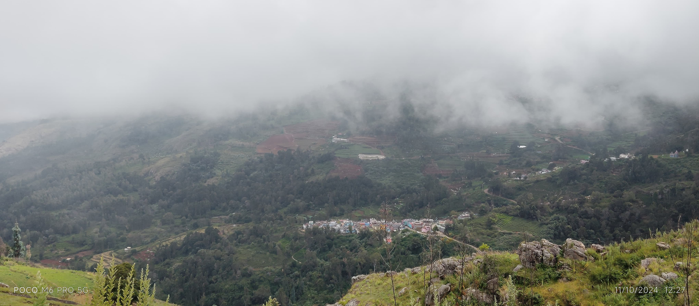
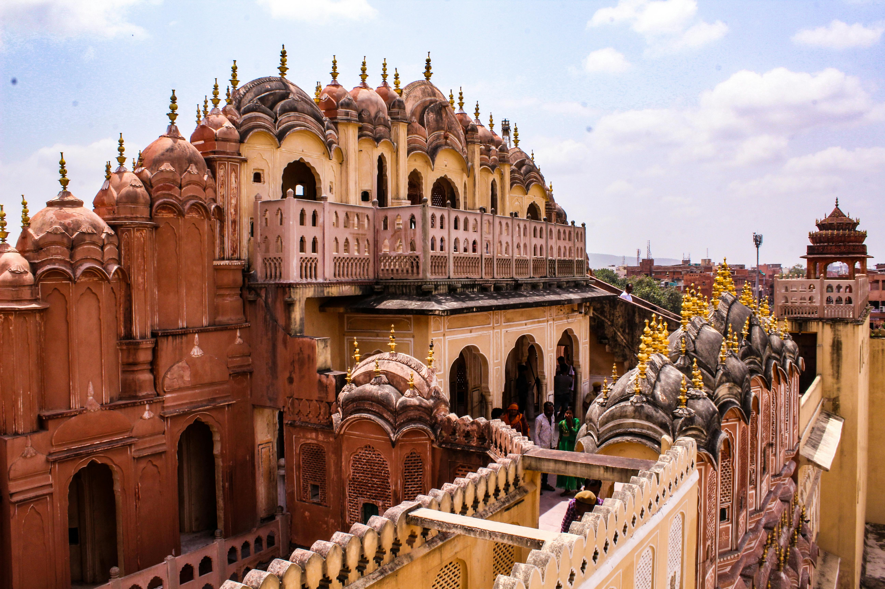
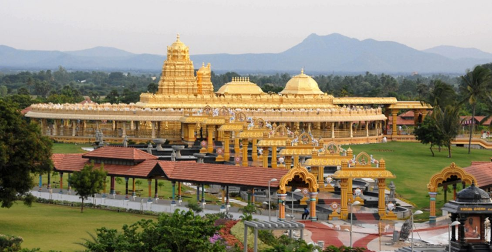
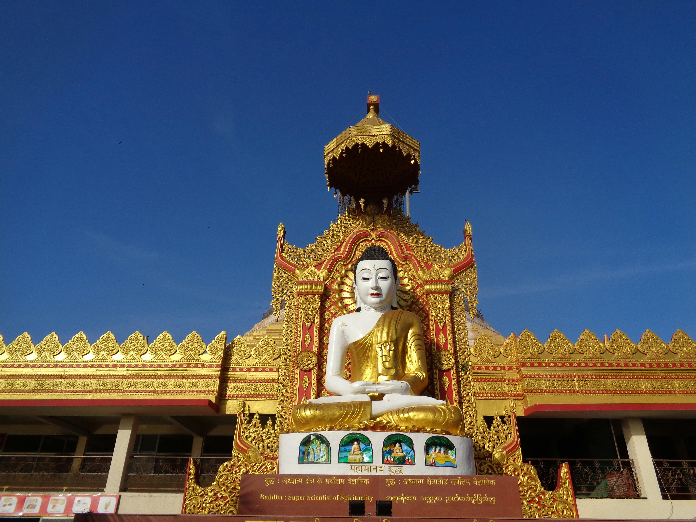

Ayodhya, located in Uttar Pradesh, India, is a city steeped in spirituality, mythology, and history. Revered as the birthplace of Lord Rama, Ayodhya holds a special place in Hinduism and attracts devotees and tourists from across the globe.The city's ancient temples, ghats, and cultural landmarks offer a blend of devotion, architectural brilliance, and heritage. Here is a guide to some of the must-visit places in Ayodhya:
The Ram Janmabhoomi Temple :
The Ram Janmabhoomi Temple is one of the holiest sites in Ayodhya. Believed to be the birthplace of Lord Rama, this temple is a major spiritual and cultural landmark. The temple is currently under construction and, once completed, is expected to become an architectural marvel and a symbol of faith for millions.
Hanuman Garhi :
Situated atop a hill, Hanuman Garhi is a popular temple dedicated to Lord Hanuman. Visitors can climb a flight of 76 steps to reach the temple, which offers stunning views of the city. The temple's serene atmosphere and intricate carvings make it a must-visit for devotees and architecture enthusiasts alike.
Kanak Bhawan :
Known for its exquisite architecture and grandeur, Kanak Bhawan is dedicated to Lord Rama and Goddess Sita. The temple is adorned with beautiful idols and intricate decorations, making it a visual and spiritual delight for visitors.
Nageshwarnath Temple :
Dedicated to Lord Shiva, the Nageshwarnath Temple is an ancient structure believed to have been built by Kush, the son of Lord Rama. The temple is significant during the Shivratri festival and offers a tranquil atmosphere for worship.
Chhoti Devkali Temple :
This temple is dedicated to Goddess Ishani, another form of Goddess Durga. It is a lesser-known yet serene site where devotees come to seek blessings.
As you conclude your journey, the chants, lights, and serene waters of Ayodhya remain etched in your heart, calling you back to this sacred land time and again. Truly, Ayodhya is a place where the past and the divine converge to create an unforgettable experience.
Sri Rangam
Srirangam, an island town located in Tamil Nadu, India, is a renowned pilgrimage destination and a treasure trove of spiritual and architectural wonders. Situated between the Kaveri and Kollidam rivers, this sacred place is home to the famous Ranganathaswamy Temple, one of the most revered Vaishnavite shrines in the country.
Sri Ranganathaswamy Temple :
The Sri Ranganathaswamy Temple, dedicated to Lord Ranganatha (a reclining form of Lord Vishnu), is the crown jewel of Srirangam. This temple is not only one of the largest functioning Hindu temples in the world but also an architectural marvel. Its Dravidian-style design features intricately carved gopurams (towering gateways), expansive courtyards, and exquisitely detailed sculptures. The Rajagopuram, the temple is tallest tower, stands at an impressive 239 feet, making it a landmark visible from afar.
The temple complex is a hub of spiritual activity, hosting numerous festivals throughout the year. The Vaikunta Ekadasi festival, celebrated with grandeur, attracts thousands of devotees who seek the blessings of Lord Ranganatha.
Srirangam Art and Culture :
Srirangam is not just about temples; it is also a cultural hub that celebrates traditional art forms. Bharatanatyam performances, Carnatic music concerts, and temple art exhibitions often take place in and around the temple complex. These events provide an enriching experience for those interested in South Indian art and heritage.
Kaveri and Kollidam Rivers :
The rivers surrounding Srirangam add to its natural beauty and spiritual importance. The Kaveri River is considered sacred, and pilgrims often take a holy dip in its waters before entering the Ranganathaswamy Temple. The picturesque views and tranquil surroundings make the riverside an ideal spot for reflection and relaxation.
Srirangam is not just a destination; it is a journey into the spiritual and architectural splendor of Tamil Nadu. As the home of the revered Sri Ranganathaswamy Temple, this island town offers a rare combination of divinity, heritage, and vibrant culture. Walking through the temple’s majestic corridors and witnessing its intricate carvings, one cannot help but feel a deep connection to India’s ancient traditions. As you leave Srirangam, you carry with you the blessings of Lord Ranganatha and a profound sense of peace and fulfillment. This sacred town is a timeless reminder of the enduring beauty of devotion and culture, inviting you to return and experience its magic once more.
Ooty: The Queen of Hill Stations

Nestled in the Nilgiri Hills of Tamil Nadu. Ooty, officially known as Udhagamandalam, is one of India’s most beloved hill stations. Famous for its stunning landscapes, lush tea gardens, and colonial charm, Ooty is a perfect getaway for nature lovers and adventure seekers alike.
Ooty Lake
This artificial lake, surrounded by eucalyptus trees and green hills, is a hub for boating and picnicking. Visitors can rent paddleboats and enjoy a serene ride across the water.
Nilgiri Mountain Railway
A UNESCO World Heritage Site, the Nilgiri Mountain Railway offers a picturesque train journey through tunnels, sharp curves, and breathtaking landscapes. Often called the "Toy Train," it connects Ooty to nearby towns like Coonoor.
Botanical Gardens
Spread across 55 acres, these gardens boast an extensive variety of plants, flowers, and trees. The annual Flower Show, held in May, is a major attraction.
Doddabetta Peak
Standing at 2,637 meters, Doddabetta Peak is the highest point in the Nilgiris. The panoramic views of the surrounding hills and valleys make it a must-visit spot for trekkers and photographers.
Tea Estates
Ooty is synonymous with tea. A visit to the tea estates and the Tea Museum offers insights into tea cultivation and processing, with plenty of opportunities for tasting.
Kerala Backwaters
The Kerala backwaters, a network of serene lagoons, lakes, rivers, and canals, offer one of India is most picturesque and tranquil experiences. Known as the "Venice of the East," these backwaters are a unique feature of Kerala is landscape and are a must-visit for nature lovers, honeymooners, and those seeking a peaceful retreat.
Top Backwater Destinations :
Alleppey (Alappuzha) :
Often referred to as the "Venice of the East," Alleppey is the hub of Kerala is backwater tourism. It is famous for its houseboat cruises, where visitors can relax while gliding through scenic canals, paddy fields, and quaint villages. The annual Nehru Trophy Boat Race held here adds to its charm.
Kumarakom :
Located near Vembanad Lake, Kumarakom is a tranquil village known for its bird sanctuary and luxurious backwater resorts. It is an ideal spot for birdwatching, fishing, and enjoying serene houseboat experiences.
Kollam :
The rivers surrounding Srirangam add to its natural beauty and spiritual importance. The Kaveri River is considered sacred, and pilgrims often take a holy dip in its waters before entering the Ranganathaswamy Temple. The picturesque views and tranquil surroundings make the riverside an ideal spot for reflection and relaxation.
Kochi (Cochin) :
While primarily a bustling port city, Kochi s nearby backwaters offer a blend of history and natural beauty. Visitors can explore traditional Chinese fishing nets and colonial-era buildings alongside serene waterways.
Jaipur Palaces

Jaipur, the capital city of Rajasthan, is a vibrant blend of history, culture, and modernity. Known as the "Pink City" for its distinct pink-colored buildings, Jaipur is a treasure trove of majestic palaces, historic forts, bustling bazaars, and exquisite craftsmanship. A key destination in India s Golden Triangle tourist circuit, Jaipur offers an unforgettable experience to travelers from around the globe.
Amber Fort :
Located on a hilltop overlooking Maota Lake, Amber Fort is a masterpiece of Rajput architecture. Built in the 16th century, this majestic fort features intricate carvings, sprawling courtyards, and the stunning Sheesh Mahal (Mirror Palace). Visitors can enjoy an elephant ride or a jeep ride to the fort while marveling at its grandeur.
City Palace :
The City Palace, located in the heart of Jaipur, is a splendid complex of courtyards, gardens, and buildings. A part of the palace still serves as the residence of the royal family. Visitors can explore the museum, which houses royal artifacts, including costumes, weapons, and paintings.
Nahargarh Fort :
Perched on the Aravalli Hills, Nahargarh Fort offers breathtaking views of Jaipur. This fort, once a retreat for the royal family, is an ideal spot for sunset views and quiet reflection.
Bustling Bazaars and Handicrafts :
Jaipur is a shopper’s paradise, renowned for its vibrant markets and traditional handicrafts.
Johari Bazaar: Famous for exquisite jewelry and gemstones.
Bapu Bazaar: Known for colorful textiles, leather goods, and mojari footwear.
Chandpole Bazaar: A hub for marble carvings and traditional handicrafts.
Tripolia Bazaar: Popular for lac bangles and brassware.
Don’t forget to pick up some Jaipur blue pottery, a craft unique to the region.
Cultural Experiences :
Light and Sound Show at Amber Fort: Learn about Jaipur’s rich history through a mesmerizing performance.
Folk Performances: Enjoy traditional dance and music shows that reflect Rajasthan’s cultural heritage.
Hot Air Balloon Rides: Witness Jaipur’s stunning landscapes from the skies.
Vellore

Nestled in the southern state of Tamil Nadu, Vellore is a city that effortlessly blends historical grandeur with modern vitality. Often referred to as the "City of Forts" for its iconic landmarks, Vellore stands as a testimony to the architectural brilliance and cultural richness of ancient India. Let’s dive into what makes Vellore a must-visit destination for travelers seeking a mix of history, spirituality, and education.
Spiritual Landmarks :
Vellore is a hub for spirituality, drawing pilgrims from across the country. The Sripuram Golden Temple, a stunning creation covered in pure gold leaf, is dedicated to Goddess Lakshmi and stands as a beacon of devotion and artistic excellence. The temple is designed in the shape of a star, surrounded by lush green landscapes that enhance its serene ambiance.
Another notable site is the Ratnagiri Murugan Temple, situated on a hilltop. This temple is dedicated to Lord Murugan and offers panoramic views of the surrounding countryside, making it a favorite spot for both devotees and nature lovers.
Nature and Leisure :
For those who enjoy exploring nature, Vellore has much to offer. The Amirthi Zoological Park, located about 25 kilometers from the city, is a haven for wildlife enthusiasts. The park is home to a variety of flora and fauna and is a popular picnic spot for families.
Yelagiri Hills, a tranquil hill station near Vellore, is perfect for trekking, boating, and simply unwinding amidst lush greenery. Its pleasant climate and serene surroundings make it an ideal getaway from the hustle and bustle of city life.
Vellore is a city that encapsulates the essence of Tamil Nadu’s rich history, spiritual depth, and modern aspirations. Whether you are a history buff, a pilgrim, a student, or a leisure traveler, Vellore promises an enriching experience. Its unique blend of the past and present ensures that there is something for everyone in this remarkable city. So, pack your bags and set out to explore Vellore—a gateway to culture, history, and tranquility.
Dharamshala

Dharamsala ( Nestled in the lap of the Dhauladhar range in Himachal Pradesh ) is a tranquil retreat that offers a unique blend of natural beauty, spiritual serenity, and cultural richness. Known as the residence of His Holiness the Dalai Lama, this picturesque town has become a global hub for spirituality and Tibetan culture. Dharamsala is a destination that rejuvenates the soul while captivating the senses.
Spiritual Retreat :
The town is dotted with monasteries and meditation centers, offering various programs on mindfulness and yoga. The Norbulingka Institute, dedicated to preserving Tibetan art and culture, is a serene place to learn about traditional crafts like thangka painting and wood carving.
A Glimpse of Tibetan Culture :
Dharamsala is often referred to as Little Lhasa because of its large Tibetan community. The upper part of the town, McLeod Ganj, is home to the Tibetan government-in-exile and hosts a variety of cultural and spiritual landmarks. The Tsuglagkhang Complex, which includes the Dalai Lama Temple, is the heart of Tibetan Buddhism in India. Visitors can witness monks chanting prayers, spinning prayer wheels, and meditating amidst a peaceful ambiance.
The Tibetan Museum nearby provides insights into the rich history, struggles, and vibrant culture of the Tibetan people. Strolling through the bustling streets of McLeod Ganj, one can explore shops selling Tibetan artifacts, handmade crafts, and spiritual items, making it a paradise for culture enthusiasts.
Local Cuisine and Hospitality :
Dharamsala’s culinary scene is as diverse as its culture. From Tibetan momos and thukpa to Himachali siddu and dhaam, the local food is a treat for the taste buds. Cafés in McLeod Ganj and Dharamsala serve everything from traditional Tibetan dishes to continental delights, often accompanied by stunning views of the mountains.
Festivals and Events :
Dharamsala hosts various cultural and spiritual events throughout the year. The Tibetan New Year (Losar) and the Dalai Lama’s birthday are celebrated with great enthusiasm. Additionally, the Dharamsala International Film Festival (DIFF) attracts filmmakers and cinephiles from around the world, showcasing a mix of regional and international films.
Dharamsala is more than just a tourist destination; it is a sanctuary for the mind, body, and soul. Its serene landscapes, spiritual depth, and vibrant culture create a unique and unforgettable experience for every visitor. Whether you seek adventure, spiritual growth, or simply a break from the hustle of daily life, Dharamsala welcomes you with open arms and leaves you with memories to cherish forever.